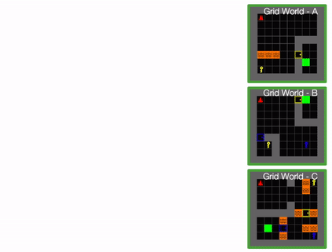

Adaptive Procedural Task Generation for Hard-Exploration Problems
Abstract
We introduce Adaptive Procedural Task Generation (APT-Gen), an approach to progressively generate a sequence of tasks as curricula to expedite reinforcement learning in hard-exploration problems. At the heart of our approach, a task generator learns to create tasks from a parameterized task space via a black-box procedural generation module. To enable curriculum learning in the absence of a direct indicator of learning progress, we propose to train the task generator by balancing the agent's performance in the generated tasks and their similarity to the target tasks. Through adversarial training, the task similarity is adaptively estimated by a task discriminator defined on the agent's behaviors, allowing the generated tasks to approximate target tasks of unknown parameterization or outside of the predefined task space. Our experiments on grid world and robotic manipulation task domains show that APT-Gen achieves substantially better performance than various existing baselines by generating tasks of rich variations.
Task Execution
Manipulation-A
Push the blue can across the bridge.
Manipulation-B
Insert the blue can into the slot.
Manipulation-C
Remove the obstacle and clear the path, then push the blue can to the
destination.
Task Progression
APT-Gen is able to adaptively generate suitable tasks from highly configurable task spaces to accelerate the learning process.
Grid-World Tasks

Manipulation Tasks
Out-of-Space Task
APT-Gen can be applied to target tasks that are outside of the parameterized task space predefined by the procedural generation module. To facilitate reinforcement learning in this challenging target task, APT-Gen progressively generates tasks that approximate complicated objects using elements provided by the procedural generation module.